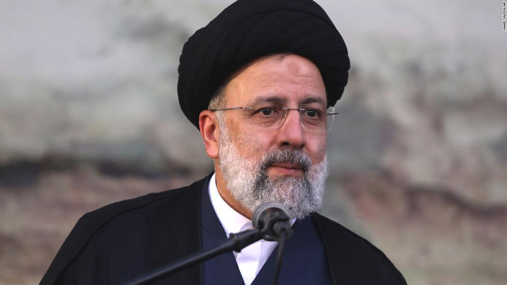
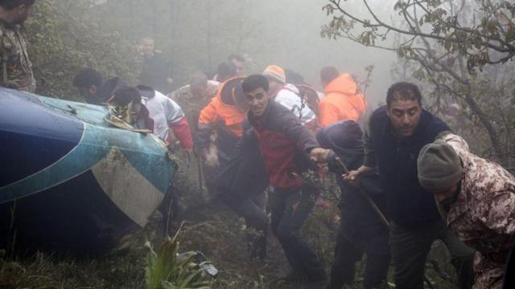
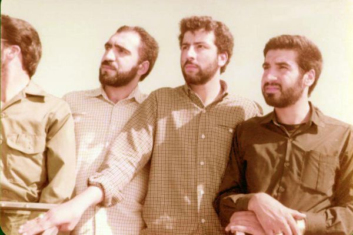

Encuentran muerto al presidente de Irán luego de que se estrellara su helicóptero
El cuerpo del presidente Ebrahim Raisi fue encontrado sin vida tras varios días de busqueda
El presidente de Irán, electo en 2021, muere a los 63 años en un accidente de helicóptero.
El suceso es raro ya que estaba involucrado en un contexto tenso en el plano internacional y con protestas dentro de su propio país.
Nacido en 1960 en la ciudad de Mashad, Raisi fue nombrado fiscal general de Karaj con tan solo 20 años tras la victoria de la Revolución Islámica de 1979.
 Volver a inicio